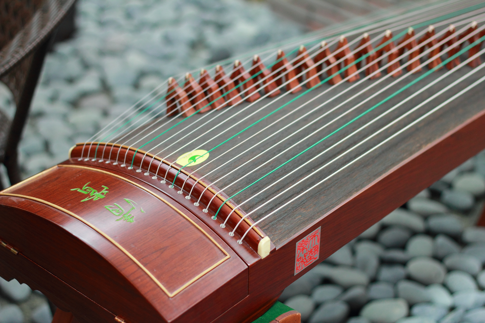

Chinese orchestras are composed of mainly bowed strings, woodwinds, plucked strings, and percussion. Typically, the vocal music is performed alone rather than chorally, and is sung with a weak, non-resonating voice or in falsetto. Traditional Chinese music is predominantly melodic rather than harmonic.
